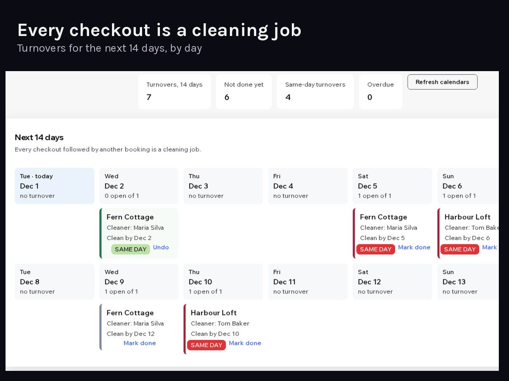

Turnover: Cleaner Schedule
Turnover cleaning from your booking calendars
- Every checkout before a new guest is a job
- One calendar link per property, read on demand
- Assign a cleaner and mark each job done
- Free covers one property and one cleaner

What it does
Every short-let checkout needs a clean before the next guest arrives. Most owners run it from a chat thread, and a missed turnover means a rushed cleaner, a refund or a bad review. This app reads the calendar you already export and turns it into a cleaning schedule.
Add a property and paste its calendar link. The app fetches the calendar on the server and reads every stay, so no export sits on your computer. Each checkout followed by another booking becomes one job on a 14-day board, with the day the clean has to happen. Back-to-back stays, open days and same-day changeovers all appear, and same-day jobs carry a red mark so nobody misses them.
Assign a cleaner to each property, then press Mark done when the job is finished. The board keeps the counts of open jobs, same-day jobs and overdue work, so the state of the week is one glance away.
The free plan covers one property and one cleaner. Premium adds unlimited properties and cleaners, a daily list for each cleaner with a CSV download, and an overdue warning when a clean day passes without a mark.
Properties, cleaners and marks stay with the app. Premium is $9 a month, or $7.20 a month billed yearly, with a 14-day free trial.
Price
Free
Premium
$9/month, or $7.20/month billed yearly ($86.40/year)
- Unlimited properties and cleaners
- A daily list for each cleaner, with CSV
- Overdue warning on missed clean days